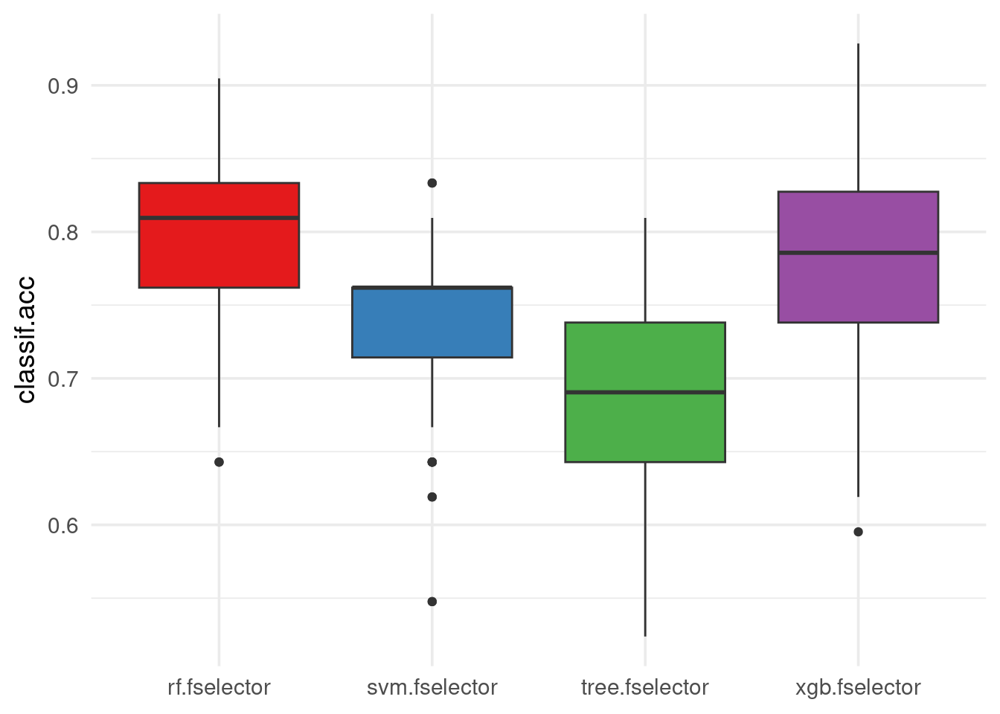
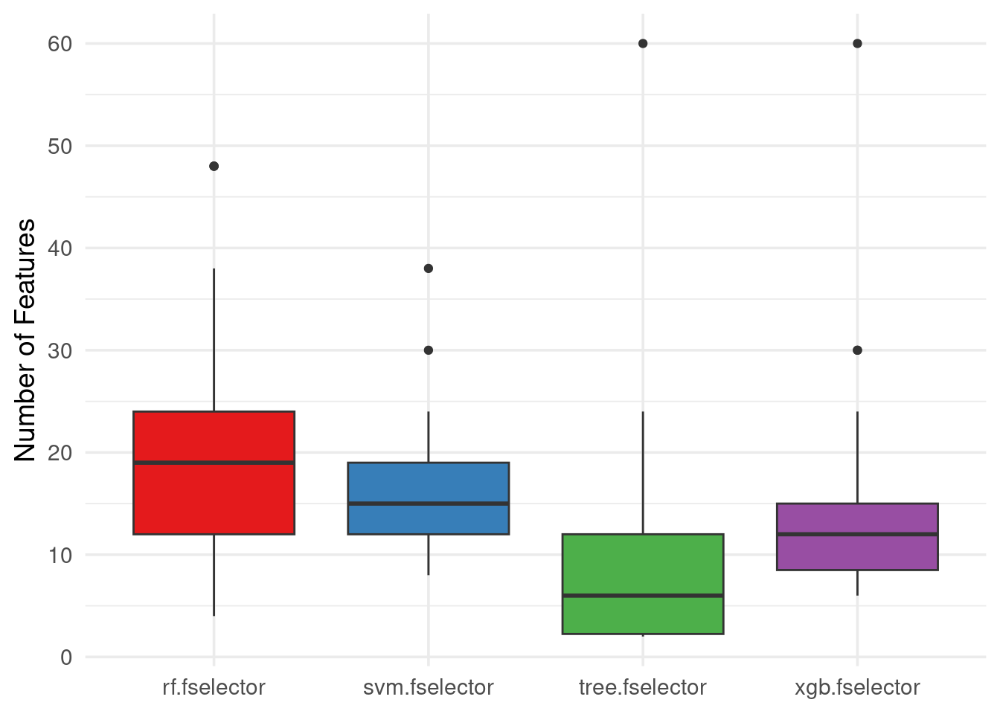
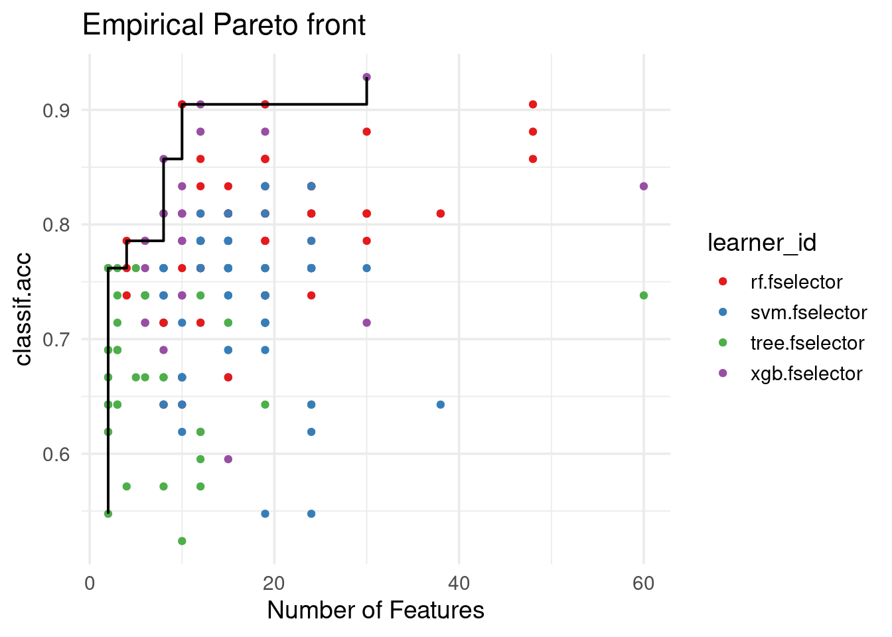
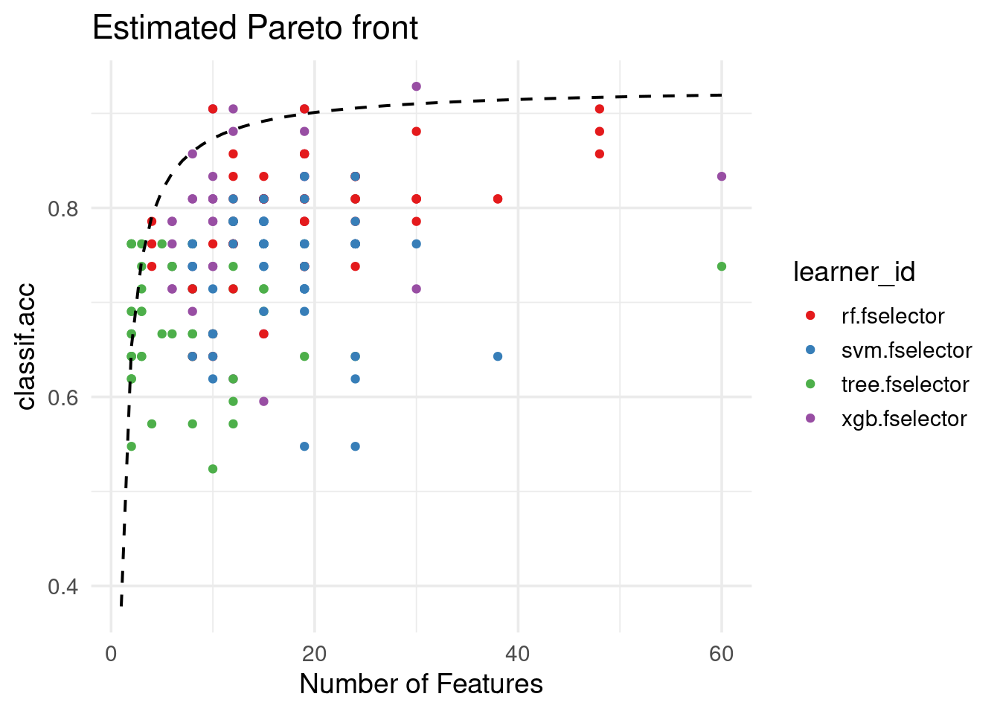
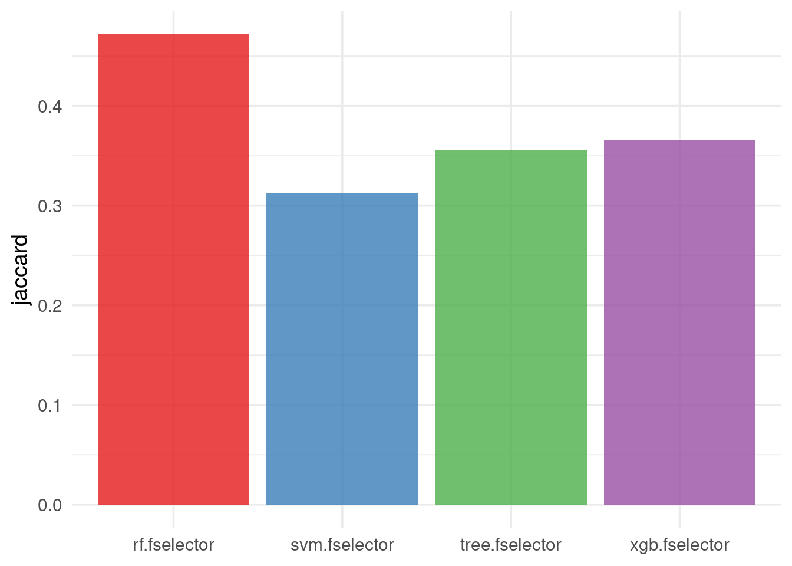
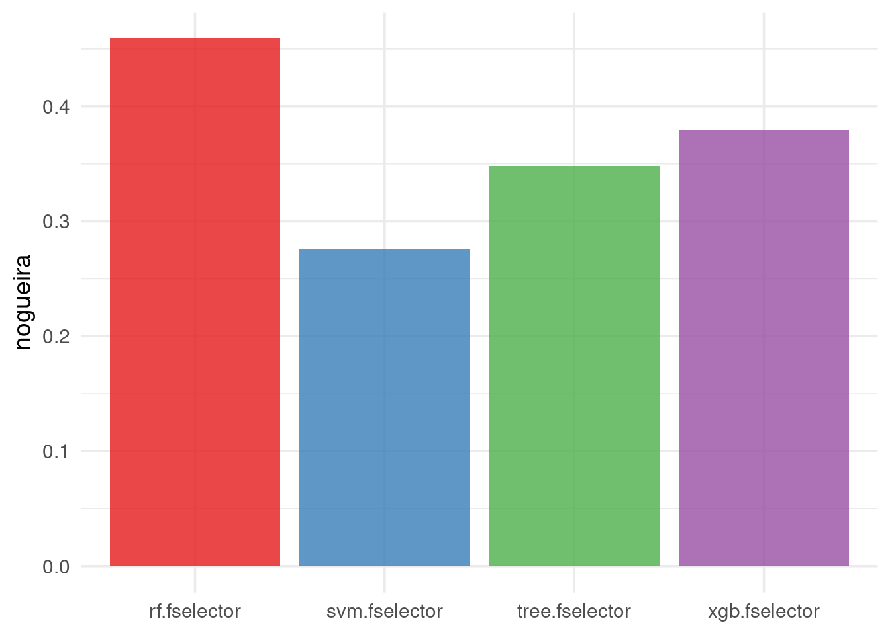

![]()
library(mlr3verse)
library(fastVoteR) # for feature ranking
library(ggplot2)
library(future)
library(progressr)Intro
In this post we will show how we can use the mlr3fselect R package to perform wrapped-based ensemble feature selection on a given dataset. Wrapper-based ensemble feature selection involves applying stability selection techniques (resampling of the data) to create robust feature subsets by leveraging multiple ML models in wrapper-based feature selection strategies.
Some papers from which we draw the ideas for this tutorial:
- Stability selection, i.e. drawing multiple subsamples from a dataset and performing feature selection on each (Meinshausen and Bühlmann 2010). Stability selection helps ensure that the selected features are robust to variations in the training data, increasing the reliability of the feature selection process.
- The ensemble idea for feature selection, i.e. using multiple methods or models to perform feature selection on a dataset (Saeys, Abeel, and Van De Peer 2008). This combines the strengths of different approaches to achieve more comprehensive results and alleviates biases that may arise from each individual approach for feature selection.
Note
We also support embedded-based ensemble feature selection, see the function mlr3fselect::embedded_ensemble_fselect() for more details.
Libraries
Dataset
We will use the sonar dataset, which is a binary classification task:
task = tsk("sonar")
task<TaskClassif:sonar> (208 x 61): Sonar: Mines vs. Rocks
* Target: Class
* Properties: twoclass
* Features (60):
- dbl (60): V1, V10, V11, V12, V13, V14, V15, V16, V17, V18, V19, V2, V20, V21, V22, V23, V24, V25, V26,
V27, V28, V29, V3, V30, V31, V32, V33, V34, V35, V36, V37, V38, V39, V4, V40, V41, V42, V43, V44, V45,
V46, V47, V48, V49, V5, V50, V51, V52, V53, V54, V55, V56, V57, V58, V59, V6, V60, V7, V8, V9EFS Workflow
The ensemble feature selection (EFS) workflow is the following (in parentheses we provide the arguments for the mlr3fselect::ensemble_fselect() function that implements this process):
- Repeatedly split a dataset to train/test sets (
init_resampling), e.g. by subsampling \(B\) times. - Choose \(M\) learners (
learners).
- Perform wrapped-based feature selection on each train set from (1) using each of the models from (2). This process results in a ‘best’ feature (sub)set and a final trained model using these best features, for each combination of train set and learner (\(B \times M\) combinations in total).
- Score the final models on the respective test sets.
To guide the feature selection process (3) we need to choose:
- An optimization algorithm (
fselector), e.g. Recursive Feature Elimination (RFE) - An inner resampling technique (
inner_resampling), e.g. 5-fold cross-validation (CV) - An inner measure (
inner_measure), e.g. classification error - A stopping criterion for the feature selection (
terminator), i.e. how many iterations should the optimization algorithm run
Note
The inner_measure (used for finding the best feature subset in each train set) and measure (assesses performance on each test set) can be different.
Parallelization
Internally, ensemble_fselect() performs a full mlr3::benchmark(), the results of which can be stored with the argument store_benchmark_result. The process is fully parallelizable, where every job is a (init resampling iteration, learner) combination. So it’s better to make sure that each RFE optimization (done via mlr3fselect::auto_fselector) is single-threaded.
Below we show the code that setups the configuration for the parallelization:
# Parallelization for EFS: use 10 cores
plan("multisession", workers = 10)RFE
For each (train set, learner) combination we will run a Recursive Feature Elimination (RFE) optimization algorithm. We configure the algorithm to start with all features of the task, remove the 80% less important features in each iteration, and stop when 2 features are reached. In each RFE iteration, a 5-fold CV resampling of the given task takes place and a learner is trained and used for prediction on the test folds. The outcome of each RFE iteration is the average CV error (performance estimate) and the feature importances (by default the average of the feature ranks from each fold). Practically, for the sonar dataset, we will have 15 RFE iterations, with the following feature subset sizes:
60 48 38 30 24 19 15 12 10 8 6 5 4 3 2
The best feature set will be chosen as the one with the lowest 5-fold CV error. i.e. the best performance estimate in the inner resampling.
In mlr3 code, we specify the RFE fselector as:
rfe = fs("rfe", n_features = 2, feature_fraction = 0.8)See this gallery post for more details on RFE optimization.
Note
- Using RFE as the feature selection optimization algorithm means that all
learnersneed to have the"importance"property.
Learners
We define a list() with the following classification learners (parameters are set at default values):
- XGBoost with early stopping
- A tree
- A random forest (RF)
- A Support Vector Machine (SVM)
max_nrounds = 500
learners = list(
lrn("classif.xgboost", id = "xgb", nrounds = max_nrounds,
early_stopping_rounds = 20, validate = "test"),
lrn("classif.rpart", id = "tree"),
lrn("classif.ranger", id = "rf", importance = "permutation"),
lrn("classif.svm", id = "svm", type = "C-classification", kernel = "linear")
)
Note
It is possible to perform tuning while also performing wrapper-based feature selection. This practically means that we would use an AutoTuner learner with its own inner resampling scheme and tuning space in the above list. The whole process would then be a double (nested) cross-validation with outer loop the \(B\) subsample iterations, which is computationally taxing. Models that need minimum to no tuning (e.g. like Random Forests) are therefore ideal candidates for wrapper-based ensemble feature selection.
Callbacks
Since SVM doesn’t support importance scores by itself, we convert the coefficients of the trained linear SVM model to importance scores via a callback:
svm_rfe = clbk("mlr3fselect.svm_rfe")
svm_rfe<CallbackBatchFSelect:mlr3fselect.svm_rfe>: SVM-RFE Callback
* Active Stages: on_optimization_beginAlso, since the XGBoost learner performs internal tuning via early stopping, where the test folds in the inner cross-validation resampling scheme act as validation sets, we need to define the following callback:
internal_ss = ps(
nrounds = p_int(upper = max_nrounds, aggr = function(x) as.integer(mean(unlist(x))))
)
xgb_clbk = clbk("mlr3fselect.internal_tuning", internal_search_space = internal_ss)
xgb_clbk<CallbackBatchFSelect:mlr3fselect.internal_tuning>: Internal Tuning
* Active Stages: on_auto_fselector_after_final_model, on_auto_fselector_before_final_model,
on_eval_before_archive, on_optimization_endThis practically sets the boosting rounds of the final XGBoost model (after the RFE optimization is finished) as the average boosting rounds from each subsequent training fold (corresponding to the model trained with the ‘best’ feature subset). For example, since we’re performing a 5-fold inner CV, we would have 5 different early-stopped boosting nrounds, from which we will use the average value to train the final XGBoost model using the whole train set.
For all learners we will prefer sparser models during the RFE optimization process. This means that across all RFE iterations, we will choose as ‘best’ feature subset the one that has the minimum number of features and its performance is within one standard error of the feature set with the best performance (e.g. the lowest classification error). This can be achieved with the following callback:
one_se_clbk = clbk("mlr3fselect.one_se_rule")
one_se_clbk<CallbackBatchFSelect:mlr3fselect.one_se_rule>: One Standard Error Rule Callback
* Active Stages: on_optimization_endExecute EFS
Using the mlr3fselect::ensemble_fselect() function, we split the sonar task to \(B = 50\) subsamples (each corresponding to a 80%/20% train/test set split) and perform RFE in each train set using each of the \(M = 4\) learners.
For a particular (train set, learner) combination, the RFE process will evaluate the \(15\) feature subsets mentioned above. Using the inner 5-fold CV resampling scheme, the average CV classification error will be used to find the best feature subset. Using only features from this best feature set, a final model will be trained using all the observations from each trained set. Lastly, the performance of this final model will be assessed on the corresponding test set using the classification accuracy metric.
set.seed(42)
efs = ensemble_fselect(
fselector = rfe,
task = task,
learners = learners,
init_resampling = rsmp("subsampling", repeats = 50, ratio = 0.8),
inner_resampling = rsmp("cv", folds = 5),
inner_measure = msr("classif.ce"),
measure = msr("classif.acc"),
terminator = trm("none"),
# following list must be named with the learners' ids
callbacks = list(
xgb = list(one_se_clbk, xgb_clbk),
tree = list(one_se_clbk),
rf = list(one_se_clbk),
svm = list(one_se_clbk, svm_rfe)
),
store_benchmark_result = FALSE
)The result is stored in an EnsembleFSResult object, which can use to visualize the results, rank the features and assess the stability of the ensemble feature selection process, among others.
Analyze EFS Results
Result Object
Printing the result object provides some initial information:
print(efs)<EnsembleFSResult> with 4 learners and 50 initial resamplings
resampling_iteration learner_id n_features
<int> <char> <int>
1: 1 xgb.fselector 8
2: 2 xgb.fselector 30
3: 3 xgb.fselector 60
4: 4 xgb.fselector 19
5: 5 xgb.fselector 6
---
196: 46 svm.fselector 24
197: 47 svm.fselector 19
198: 48 svm.fselector 15
199: 49 svm.fselector 19
200: 50 svm.fselector 8As we can see, we have \(M \times B = 4 \times 50 = 200\) (init resampling, learner) combinations. We can inspect the actual data.table result:
efs$result learner_id resampling_iteration classif.acc features n_features classif.ce_inner
<char> <int> <num> <list> <int> <num>
1: xgb.fselector 1 0.6904762 V11,V12,V16,V21,V36,V4,... 8 0.1081996
2: xgb.fselector 2 0.9285714 V1,V10,V11,V12,V13,V15,... 30 0.1627451
3: xgb.fselector 3 0.8333333 V1,V10,V11,V12,V13,V14,... 60 0.1203209
4: xgb.fselector 4 0.8571429 V11,V12,V15,V16,V21,V27,... 19 0.1447415
5: xgb.fselector 5 0.7142857 V10,V11,V16,V31,V36,V45 6 0.1319073
---
196: svm.fselector 46 0.7619048 V1,V11,V12,V14,V23,V25,... 24 0.1440285
197: svm.fselector 47 0.7380952 V11,V15,V23,V30,V31,V33,... 19 0.1331551
198: svm.fselector 48 0.7619048 V12,V17,V31,V32,V36,V37,... 15 0.1809269
199: svm.fselector 49 0.7142857 V11,V12,V14,V17,V20,V24,... 19 0.1864528
200: svm.fselector 50 0.7619048 V11,V14,V23,V36,V39,V40,... 8 0.1629234
importance
<list>
1: 6.8,6.8,6.4,3.8,3.6,3.4,...
2: 27.2,26.8,25.6,22.0,22.0,21.6,...
3: 60.0,57.6,53.8,52.0,51.4,49.6,...
4: 19.0,13.4,13.0,12.8,12.2,11.0,...
5: 4.4,4.2,4.2,3.8,2.2,2.2
---
196: 24.0,21.6,20.2,18.4,17.6,16.8,...
197: 16.6,16.2,16.2,15.0,14.8,14.4,...
198: 14.0,13.6,13.0,10.4, 9.8, 9.2,...
199: 17.6,16.0,15.6,14.4,13.4,12.8,...
200: 8.0,5.8,5.6,5.2,4.6,3.2,...For each learner ("learner_id") and dataset subsample ("resampling_iteration") we get:
- The ‘best’ feature subsets (
"features") - The number of ‘best’ features (
"nfeatures") - The importances for these ‘best’ features (
"importance") - this output column we get only because RFE optimization was used - The inner optimization performance scores on the train sets (
"classif.ce_inner") - The performance scores on the test sets (
"classif.acc")
Since there are two ways in this process to evaluate performance, we can always check which is the active measure:
efs$active_measure[1] "outer"By default the active measure is the "outer", i.e. the measure used to evaluate each learner’s performance in the test sets. In our case that was the classification accuracy:
efs$measure<MeasureClassifSimple:classif.acc>: Classification Accuracy
* Packages: mlr3, mlr3measures
* Range: [0, 1]
* Minimize: FALSE
* Average: macro
* Parameters: list()
* Properties: -
* Predict type: response
Note
In the following sections we can use the inner optimization scores (i.e. "classif.ce_inner") by executing efs$set_active_measure("inner"). This affects all methods and plots that use performance scores.
Performance
We can view the performance scores of the different learners used in the ensemble feature selection process. Each box represents the distribution of scores across different resampling iterations for a particular learner.
autoplot(efs, type = "performance", theme = theme_minimal(base_size = 14)) +
scale_fill_brewer(palette = "Set1")
We observe that RF has better classification accuracy on the test sets of the \(50\) subsamples, followed by XGBoost, then the SVM and last the tree model.
Number of Selected Features
Continuing, we can plot the number of features selected by each learner in the different resampling iterations:
autoplot(efs, type = "n_features", theme = theme_minimal(base_size = 14)) +
scale_fill_brewer(palette = "Set1") +
scale_y_continuous(breaks = seq(0, 60, 10))
We observe that RF needed more features to achieve the best average performance, followed by SVM, then XGBoost and the tree model was the model using the least features (but with worst performance).
Pareto Plot
Both performance scores and number of features selected by the RFE optimization process can be visualized jointly in the Pareto plot. Here we also draw the Pareto front, i.e. the set of points that represent the trade-off between the number of features and performance (classification accuracy). As we see below, these points are derived from multiple learners and resamplings:
autoplot(efs, type = "pareto", theme = theme_minimal(base_size = 14)) +
scale_color_brewer(palette = "Set1") +
labs(title = "Empirical Pareto front")
We can also draw an estimated Pareto front curve by fitting a linear model with the inverse of the number of selected features (\(1/x\)) of the empirical Pareto front as input, and the associated performance scores as output:
autoplot(efs, type = "pareto", pareto_front = "estimated",
theme = theme_minimal(base_size = 14)) +
scale_color_brewer(palette = "Set1") +
labs(title = "Estimated Pareto front")
Knee Point Identification
No matter the type of Pareto front that we chose, specialized methods are available to identify knee points, i.e. points of the Pareto front with an optimal trade-off between performance and number of selected features.
By default, we use the geometry-based Normal-Boundary Intersection (NBI) method. This approach calculates the perpendicular distance of each point from the line connecting the first (worst performance, minimum number of features) and last (best performance, maximum number of features) point of the Pareto front. The knee point is then identified as the point with the maximum distance from this line (Das 1999).
Using the empirical and estimated Pareto fronts, we observe that the optimal knee points correspond to different numbers of features:
efs$knee_points() n_features classif.acc
<num> <num>
1: 10 0.9047619efs$knee_points(type = "estimated") n_features classif.acc
<int> <num>
1: 8 0.8597253
TipNumber of features cutoff
The number of features at the identified knee point provides a cutoff for prioritizing features when working with a ranked feature list (see “Feature Ranking” section).
Stability
The stabm R package (Bommert and Lang 2021) implements many measures for the assessment of the stability of feature selection, i.e. the similarity between the selected feature sets ("features" column in the EnsembleFSResult object). We can use these measures to assess and visualize the stability across all resampling iterations and learners (global = "TRUE") or per each learner separately (global = "FALSE").
The default stability measure is the Jaccard Index:
efs$stability(stability_measure = "jaccard", global = TRUE)[1] 0.2640504Stability per learner:
efs$stability(stability_measure = "jaccard", global = FALSE) xgb.fselector tree.fselector rf.fselector svm.fselector
0.3657964 0.3554681 0.4716744 0.3119381 We observe that the RF model was the most stable in identifying similar predictive features across the different subsamples of the dataset, while the SVM model the least stable.
To visualize stability, the following code generates a stability barplot:
autoplot(efs, type = "stability", theme = theme_minimal(base_size = 14)) +
scale_fill_brewer(palette = "Set1")
Alternatively, the Nogueira stability measure can be used, which unlike the Jaccard Index, it’s a chance-corrected similarity measure (Nogueira, Sechidis, and Brown 2018):
autoplot(efs, type = "stability", stability_measure = "nogueira",
stability_args = list(p = task$n_features),
theme = theme_minimal(base_size = 14)) +
scale_fill_brewer(palette = "Set1")
Feature Ranking
Using the Pareto method, we demonstrated how we can identify a reasonable cutoff for the number of selected features. Now we will focus on how to create a consensus ranked feature list based on the results of the ensemble feature selection.
The most straightforward ranking is obtained by counting how often each feature appears in the ‘best’ feature subsets ("features"). Below we show the top 8 features, i.e. up to the cutoff derived from the knee point of the estimated Pareto front. The column "score" represents these counts, while the column "norm_score" is the feature selection frequency or also known as selection probability (Meinshausen and Bühlmann 2010):
efs$feature_ranking(method = "av", use_weights = FALSE, committee_size = 8) feature score norm_score borda_score
<char> <num> <num> <num>
1: V12 179 0.895 1.0000000
2: V11 170 0.850 0.9830508
3: V9 123 0.615 0.9661017
4: V45 121 0.605 0.9491525
5: V16 118 0.590 0.9322034
6: V36 113 0.565 0.9152542
7: V49 104 0.520 0.8983051
8: V4 99 0.495 0.8813559In the language of Voting Theory, we call the method that generates these counts approval voting (method = "av") (Lackner and Skowron 2023). Using this framework, learners act as voters, features act as candidates and voters select certain candidates (features). The primary objective is to compile these selections into a consensus ranked list of features (a committee). The committee_size specifies how many (top-ranked) features to return.
Internally, $feature_ranking() uses the fastVoteR R package, which supports more advanced ranking methods. For example, we can perform weighted ranking, by considering the varying performance (accuracy) of each learner. This results in the same top 8 features but with slightly different ordering:
efs$feature_ranking(method = "av", use_weights = TRUE, committee_size = 8) feature score norm_score borda_score
<char> <num> <num> <num>
1: V12 134.78571 0.8995710 1.0000000
2: V11 127.33333 0.8498331 0.9830508
3: V45 94.45238 0.6303830 0.9661017
4: V9 93.71429 0.6254569 0.9491525
5: V16 89.76190 0.5990783 0.9322034
6: V36 87.97619 0.5871603 0.9152542
7: V49 80.64286 0.5382171 0.8983051
8: V4 76.64286 0.5115207 0.8813559Additionally, alternative ranking methods are supported. Below, we use satisfaction approval voting (SAV), which ranks features by normalizing approval scores based on the number of features a model has selected. Specifically, models that select more features distribute their “approval” across a larger set, reducing the contribution to each selected feature. Conversely, features chosen by models with fewer selected features receive higher weights, as their selection reflects stronger individual importance. This approach ensures that sparsely selected features are prioritized in the ranking, leading to a different set of top-ranked features compared to standard approval voting. For instance, in the example above, the "V10" feature enters the top 8 features, replacing "V4":
efs$feature_ranking(method = "sav", committee_size = 8) feature score norm_score borda_score
<char> <num> <num> <num>
1: V11 15.353545 0.9100050 1.0000000
2: V12 14.107691 0.8361632 0.9830508
3: V16 7.698460 0.4562879 0.9661017
4: V45 6.811607 0.4037241 0.9491525
5: V9 6.443311 0.3818952 0.9322034
6: V36 6.060615 0.3592128 0.9152542
7: V10 5.955446 0.3529794 0.8983051
8: V49 4.741014 0.2810000 0.8813559EFS-based Feature Selection
The ultimate goal of the ensemble feature selection process is to identify predictive and stable features. By combining the ranked feature list with the Pareto-derived cutoff, we can select the final set of features for further modeling:
n_features = efs$knee_points(type = "estimated")$n_features
res = efs$feature_ranking(method = "sav", committee_size = n_features)
res$feature[1] "V11" "V12" "V16" "V45" "V9" "V36" "V10" "V49"Session Information
sessioninfo::session_info(info = "packages")═ Session info ═══════════════════════════════════════════════════════════════════════════════════════════════════════
─ Packages ───────────────────────────────────────────────────────────────────────────────────────────────────────────
! package * version date (UTC) lib source
P backports 1.5.0 2024-05-23 [?] CRAN (R 4.4.2)
P bbotk 1.5.0 2024-12-17 [?] CRAN (R 4.4.2)
P checkmate 2.3.2 2024-07-29 [?] CRAN (R 4.4.2)
P class 7.3-22 2023-05-03 [?] CRAN (R 4.4.2)
P cli 3.6.3 2024-06-21 [?] CRAN (R 4.4.2)
P clue 0.3-66 2024-11-13 [?] CRAN (R 4.4.2)
P cluster 2.1.6 2023-12-01 [?] CRAN (R 4.4.2)
P codetools 0.2-20 2024-03-31 [?] CRAN (R 4.4.2)
P colorspace 2.1-1 2024-07-26 [?] CRAN (R 4.4.2)
P crayon 1.5.3 2024-06-20 [?] CRAN (R 4.4.2)
P data.table * 1.16.4 2024-12-06 [?] CRAN (R 4.4.2)
P DEoptimR 1.1-3-1 2024-11-23 [?] CRAN (R 4.4.2)
P digest 0.6.37 2024-08-19 [?] CRAN (R 4.4.2)
P diptest 0.77-1 2024-04-10 [?] CRAN (R 4.4.2)
P evaluate 1.0.1 2024-10-10 [?] CRAN (R 4.4.2)
P farver 2.1.2 2024-05-13 [?] CRAN (R 4.4.2)
P fastmap 1.2.0 2024-05-15 [?] CRAN (R 4.4.2)
P fastVoteR * 0.0.1 2024-11-27 [?] RSPM
P flexmix 2.3-19 2023-03-16 [?] CRAN (R 4.4.2)
P fpc 2.2-13 2024-09-24 [?] CRAN (R 4.4.2)
P future * 1.34.0 2024-07-29 [?] CRAN (R 4.4.2)
P ggplot2 * 3.5.1 2024-04-23 [?] CRAN (R 4.4.2)
P globals 0.16.3 2024-03-08 [?] CRAN (R 4.4.2)
P glue 1.8.0 2024-09-30 [?] CRAN (R 4.4.2)
P gtable 0.3.6 2024-10-25 [?] CRAN (R 4.4.2)
P htmltools 0.5.8.1 2024-04-04 [?] CRAN (R 4.4.2)
P jsonlite 1.8.9 2024-09-20 [?] CRAN (R 4.4.2)
P kernlab 0.9-33 2024-08-13 [?] CRAN (R 4.4.2)
P knitr 1.49 2024-11-08 [?] CRAN (R 4.4.2)
P labeling 0.4.3 2023-08-29 [?] CRAN (R 4.4.2)
P lattice 0.22-6 2024-03-20 [?] CRAN (R 4.4.2)
P lgr 0.4.4 2022-09-05 [?] CRAN (R 4.4.2)
P lifecycle 1.0.4 2023-11-07 [?] CRAN (R 4.4.2)
P listenv 0.9.1 2024-01-29 [?] CRAN (R 4.4.2)
P magrittr 2.0.3 2022-03-30 [?] CRAN (R 4.4.2)
P MASS 7.3-61 2024-06-13 [?] CRAN (R 4.4.2)
P Matrix 1.7-1 2024-10-18 [?] CRAN (R 4.4.2)
P mclust 6.1.1 2024-04-29 [?] CRAN (R 4.4.2)
P mlr3 * 0.22.1 2024-11-27 [?] CRAN (R 4.4.2)
P mlr3cluster 0.1.10 2024-10-03 [?] CRAN (R 4.4.2)
P mlr3data 0.9.0 2024-11-08 [?] CRAN (R 4.4.2)
P mlr3filters 0.8.1 2024-11-08 [?] CRAN (R 4.4.2)
P mlr3fselect 1.2.1.9000 2024-12-16 [?] Github (mlr-org/mlr3fselect@ab6360a)
P mlr3hyperband 0.6.0 2024-06-29 [?] CRAN (R 4.4.2)
P mlr3learners 0.9.0 2024-11-23 [?] CRAN (R 4.4.2)
P mlr3mbo 0.2.8 2024-11-21 [?] CRAN (R 4.4.2)
P mlr3measures 1.0.0 2024-09-11 [?] CRAN (R 4.4.2)
P mlr3misc 0.16.0 2024-11-28 [?] CRAN (R 4.4.2)
P mlr3pipelines 0.7.1 2024-11-14 [?] CRAN (R 4.4.2)
P mlr3tuning 1.3.0 2024-12-17 [?] CRAN (R 4.4.2)
P mlr3tuningspaces 0.5.2 2024-11-22 [?] CRAN (R 4.4.2)
P mlr3verse * 0.3.0 2024-06-30 [?] CRAN (R 4.4.2)
P mlr3viz 0.10.0.9000 2024-12-30 [?] Github (mlr-org/mlr3viz@b96b886)
P modeltools 0.2-23 2020-03-05 [?] CRAN (R 4.4.2)
P munsell 0.5.1 2024-04-01 [?] CRAN (R 4.4.2)
P nnet 7.3-19 2023-05-03 [?] CRAN (R 4.4.2)
P palmerpenguins 0.1.1 2022-08-15 [?] CRAN (R 4.4.2)
P paradox 1.0.1 2024-07-09 [?] CRAN (R 4.4.2)
P parallelly 1.41.0 2024-12-18 [?] CRAN (R 4.4.2)
P pillar 1.10.0 2024-12-17 [?] CRAN (R 4.4.2)
P pkgconfig 2.0.3 2019-09-22 [?] CRAN (R 4.4.2)
P prabclus 2.3-4 2024-09-24 [?] CRAN (R 4.4.2)
P progressr * 0.15.1 2024-11-22 [?] CRAN (R 4.4.2)
P R6 2.5.1 2021-08-19 [?] CRAN (R 4.4.2)
P RColorBrewer 1.1-3 2022-04-03 [?] CRAN (R 4.4.2)
P Rcpp 1.0.13-1 2024-11-02 [?] CRAN (R 4.4.2)
renv 1.0.11 2024-10-12 [1] CRAN (R 4.4.2)
P rlang 1.1.4 2024-06-04 [?] CRAN (R 4.4.2)
P rmarkdown 2.29 2024-11-04 [?] CRAN (R 4.4.2)
P robustbase 0.99-4-1 2024-09-27 [?] CRAN (R 4.4.2)
P scales 1.3.0 2023-11-28 [?] CRAN (R 4.4.2)
P sessioninfo 1.2.2 2021-12-06 [?] CRAN (R 4.4.2)
P spacefillr 0.3.3 2024-05-22 [?] CRAN (R 4.4.2)
P stabm 1.2.2 2023-04-04 [?] CRAN (R 4.4.2)
P tibble 3.2.1 2023-03-20 [?] CRAN (R 4.4.2)
P uuid 1.2-1 2024-07-29 [?] CRAN (R 4.4.2)
P vctrs 0.6.5 2023-12-01 [?] CRAN (R 4.4.2)
P withr 3.0.2 2024-10-28 [?] CRAN (R 4.4.2)
P xfun 0.49 2024-10-31 [?] CRAN (R 4.4.2)
P yaml 2.3.10 2024-07-26 [?] RSPM
[1] /home/john/repos/mlr3-packages/mlr3website/mlr-org/renv/library/linux-ubuntu-focal/R-4.4/x86_64-pc-linux-gnu
[2] /home/john/.cache/R/renv/sandbox/linux-ubuntu-focal/R-4.4/x86_64-pc-linux-gnu/db5e602d
P ── Loaded and on-disk path mismatch.
──────────────────────────────────────────────────────────────────────────────────────────────────────────────────────References
Bommert, Andrea, and Michel Lang. 2021. “stabm: Stability Measures for Feature Selection.” Journal of Open Source Software 6 (59): 3010. https://doi.org/10.21105/JOSS.03010.
Das, I. 1999. “On characterizing the "knee" of the Pareto curve based on normal-boundary intersection.” Structural Optimization 18 (2-3): 107–15. https://doi.org/10.1007/BF01195985/METRICS.
Lackner, Martin, and Piotr Skowron. 2023. Multi-Winner Voting with Approval Preferences. Springer Nature. https://doi.org/10.1007/978-3-031-09016-5.
Meinshausen, Nicolai, and Peter Bühlmann. 2010. “Stability Selection.” Journal of the Royal Statistical Society Series B: Statistical Methodology 72 (4): 417–73. https://doi.org/10.1111/J.1467-9868.2010.00740.X.
Nogueira, Sarah, Konstantinos Sechidis, and Gavin Brown. 2018. “On the Stability of Feature Selection Algorithms.” Journal of Machine Learning Research 18 (174): 1–54. http://jmlr.org/papers/v18/17-514.html.
Saeys, Yvan, Thomas Abeel, and Yves Van De Peer. 2008. “Robust feature selection using ensemble feature selection techniques.” Machine Learning and Knowledge Discovery in Databases 5212 LNAI: 313–25. https://doi.org/10.1007/978-3-540-87481-2_21.